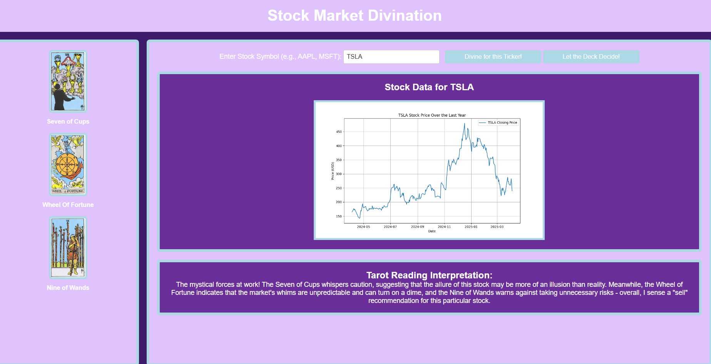
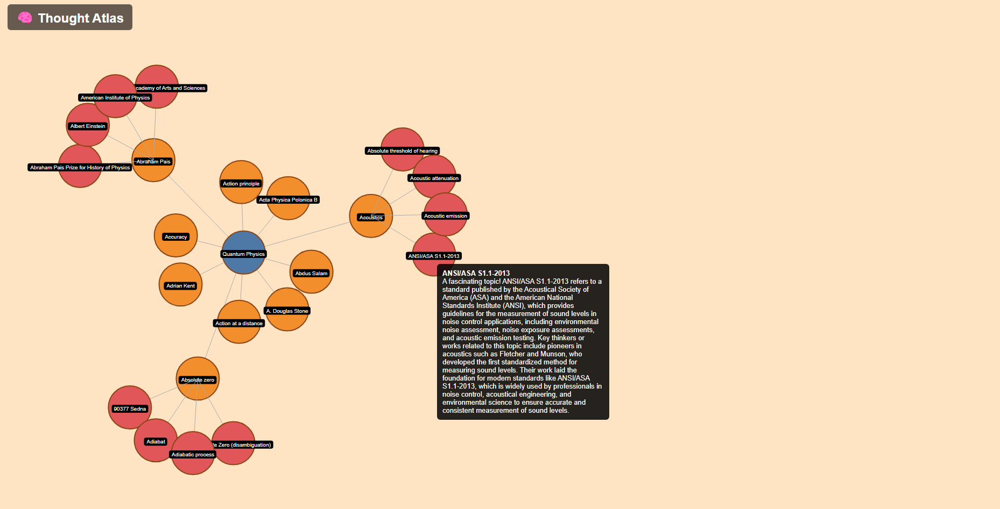
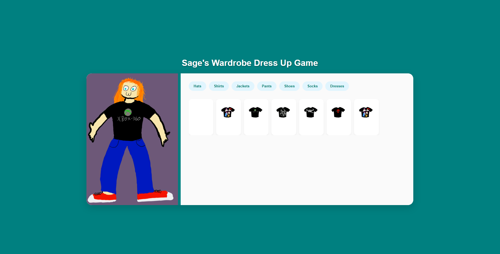

Sage
Walsh
Smith
Graduate of
Applied Mathematics,
Junior programmer,
lover of outdoors
I'm a data-driven problem solver with a passion for turning messy data into meaningful insights.
I love working with Python, R, SQL, and JavaScript. Collaborative and fast paced projects are where I thrive.


Handwritten Digit Recognition AI Neural Network
Spring 2025
A web app that trains a neural network using the MNIST dataset to recognize handwritten digits (0–9), then lets users draw digits in-browser to test the model in real time. Built with Python (TensorFlow, Flask), JavaScript, HTML/CSS, and Matplotlib for accuracy visualization, it demonstrates end-to-end AI deployment, from model training to interactive web integration.

Thought Atlas: an AI Rabbit hole
Spring 2025
ThoughtAtlas is an AI-powered web app that visualizes connections between human ideas across disciplines using Ollama LLM, Wikipedia, and graph theory. Built with Python (Flask/FastAPI), Ollama, Wikipedia API, NetworkX, and D3.js, it generates an interactive knowledge map where users can explore and navigate intellectual pathways.

Dress Up Game
Spring 2025
Full stack dress up game web application that lets users mix and match outfits on a customizable avatar using an intuitive interface. Built with Python (Flask backend), HTML/CSS for styling, and JavaScript for interactivity. This project showcases front-end skills, user experience design, and asset management in a dynamic, creative environment.
Jimmy John's
Delivery Driver
January 2023 - April 2023
As a Delivery Driver at Jimmy John’s, I provided exceptional customer service by ensuring accurate and timely deliveries in a high-paced environment. I consistently demonstrated reliability and punctuality, contributing to smooth daily operations. My role involved managing transactions through cash handling and point-of-sale systems, while also developing strong communication and interpersonal skills through direct interactions with a diverse customer base.